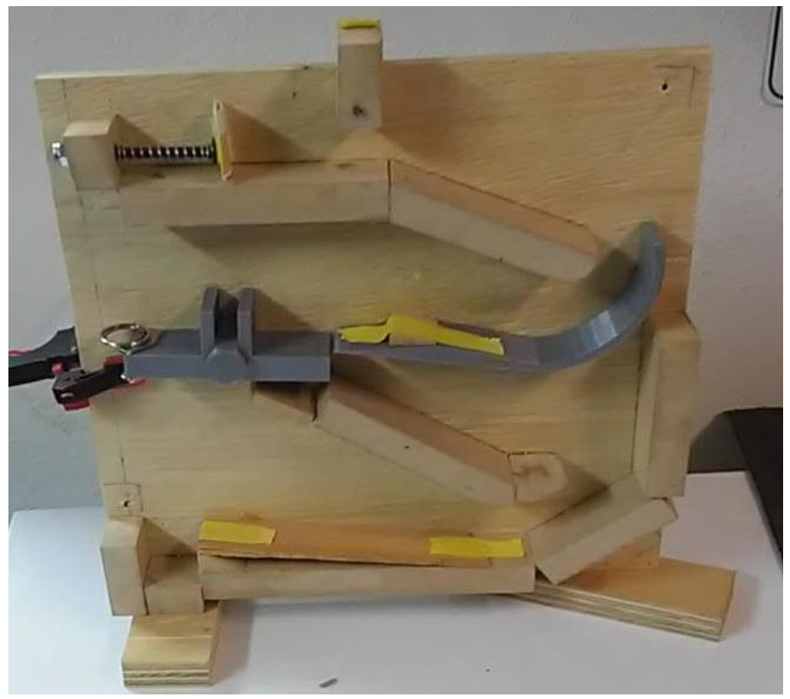
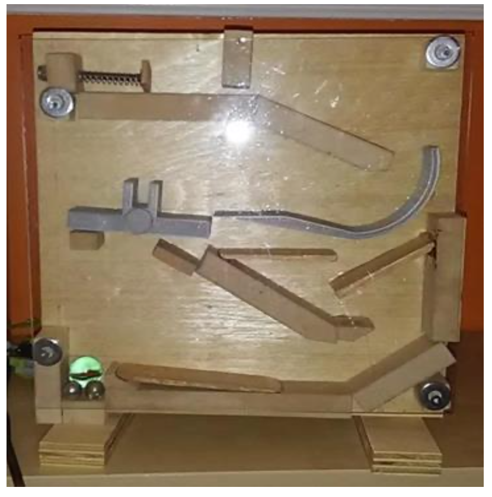
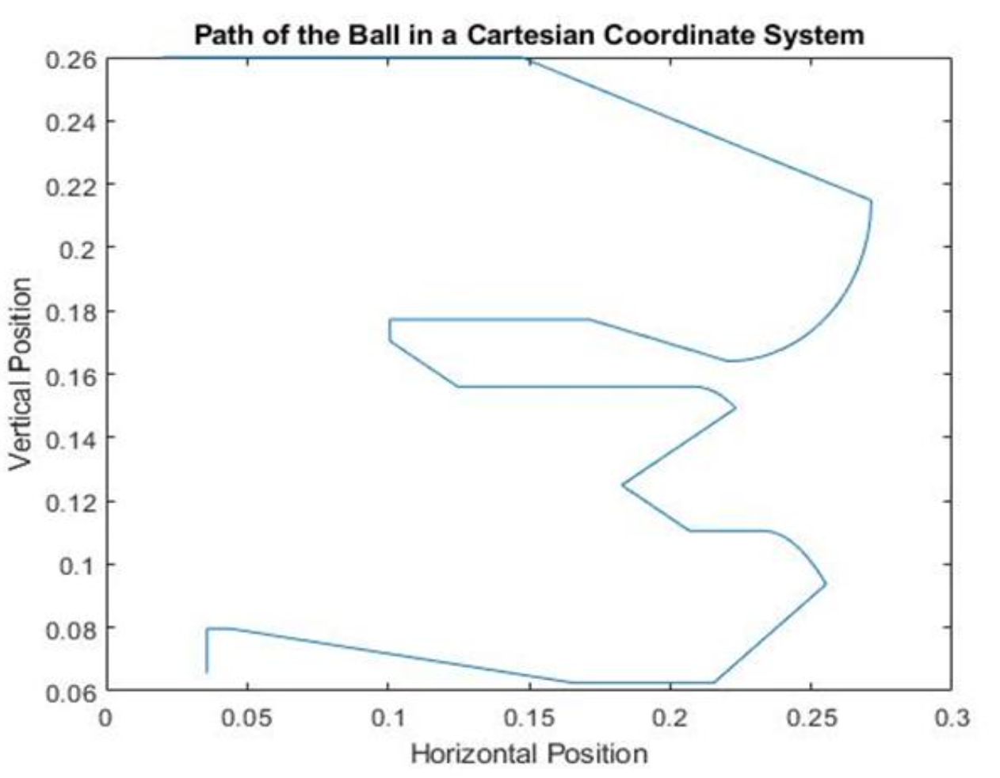

Overview
In this project, my team designed, analyzed and simulated a dynamic system that transports a ball from one corner to the other of a given vertical slab. The main objective of this project were to ensure that the ball took an average of 3-5 seconds to the reach the bottom of the vertical slab.

Preliminary Design
The main objective of this project was achieved by including different components in the ball's path. The components include a rotating element, a curved path, a spring and an impact. All these components were added to the system to slow down the ball as it moved towards the end of vertical slab. The spring was included in the system to make the system passive, i.e. the ball's motion is initiated by the spring, no direct contact.
After satisfying objective of this project, the dynamic system was simulated using MATLAB to ensure that the real and simulated time of the dynamic system were within a reasonable degree of error.
Design Updates
-
The preliminary design was changed by removing the slope at the starting position (at the top of the vertical slab) - to ensure that the ball starts at rest. This would reduce error in simulating the motion of the ball in MATLAB.

Design 1.1 - Removed the slope at start position.
Problems encountered with Design 1.1
Over-rotation of the lever arm.
Ball travelled much faster than anticipated in the solidwork simulation.
Ball bouncing on the curved path after impact.
The ball doesn't have enough kinetic energy at the last horizontal path to make it up the slope.
Design 1.1 Demonstration
My team and I made changes to Design 1.1 to counteract the problems mentioned above.
-
To counteract the problems encountered in Design 1.1, the following changes were made:
Removed initial impact - there are several other locations of impact along the path.
Reduced slope height for final horizontal path - so ball has enough energy to make it over.
Added stops for the rotating part.

Design 1.2
The changes made to Design 1.1 were based off the observation that the initial impact required too much force for the ball to go past it and hence it was hard to get an optimal initial speed for the ball, which ultimately affected the total time. Also, to help the ball make it over into the stop ditch, the end slope’s top was sanded, as shown above. Unfortunately, controlling the initial speed wasn’t enough to reach the time requirements of the project as the ball was still covering the distance in a very short period.
Design 1.2 Demonstration
As you can see from the demo above, the ball took 2 seconds to travel from the top to the bottom, 1 second short of the objective time. Therefore, the team decided to make changes to Design 1.2 to achieve our objective of 3-5 seconds of total displacment time.
-
To counteract the problems encountered in Design 1.2, the following modifications were made to Design 1.1
Added two extra paths, to increase the total displacement.
Add a more gradual slope at the end path, for a constant deceleration at the end.
Placed the rotating rod at its original position to slow down the ball after slingshot.

Design 1.3
The two extra paths in Design 1.3 were not added until after the first test carried out with the initial impact - without the two extra paths, it was observed that the ball was being transported to the end zone swiftly. Addition of the two extra paths and the gradual slope for constant deceleration of the ball, resulted in optimum time of about 3 seconds - which was the main objective of this project.
Design 1.3 achieved our objective of 3-5 seconds toal displacment time. Therefore, Design 1.3 was accepted as the final design of the dynamic system and we moved on to simulating the motion of the ball using MATLAB.

Final Design of the Dynamic System
MATLAB Simulations

MATLAB Simulation
The detailed report of the project is included for your reference. The report includes details regarding the governing equations of each components employed in simulating the dynamic system in MATLAB.
Shoot me a message and I'll share my MATLAB files!